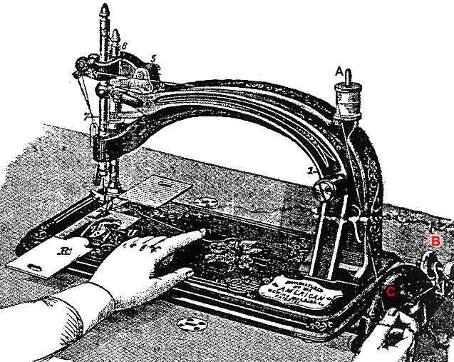

Place the spool on post A, bring the bobbin winder B over until the gum ring rests on balance wheel C. Press the bobbin on pin D, wrapping the thread tightly around two or three times.
Proceed then to work the machine as in sewing, holding the thread as represented in the illustration, winding evenly and not too full, after which return the winder to its former position.